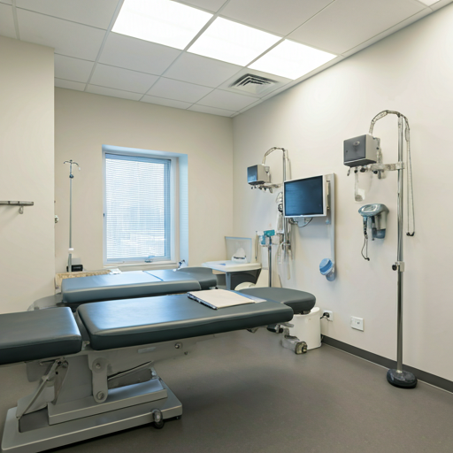
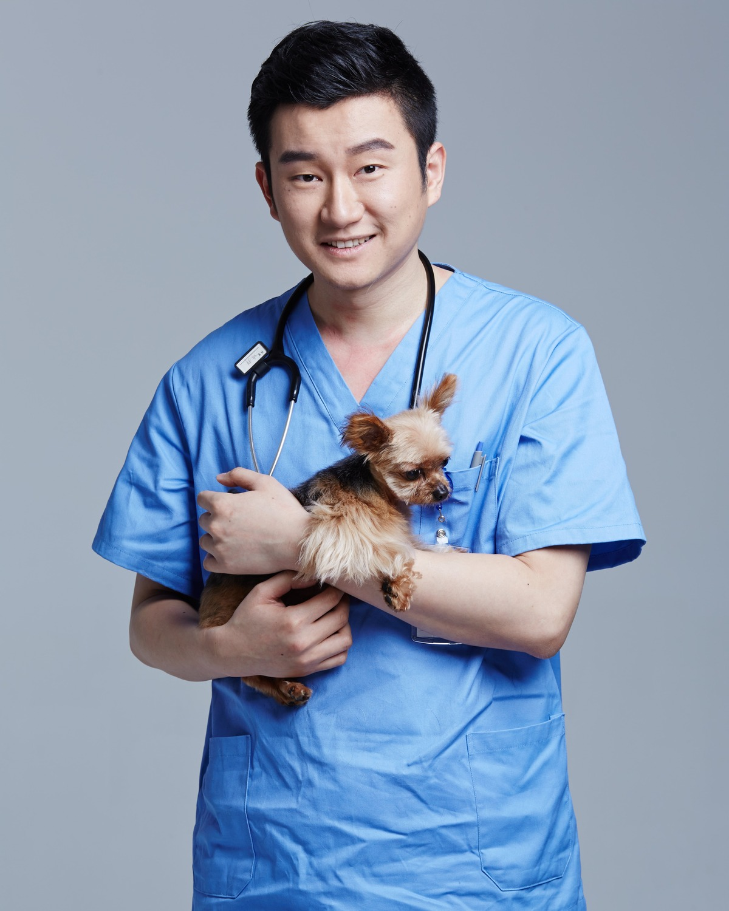

浙江张旭动物医院，专注犬猫临床诊疗，以更规范的诊疗流程、更细致的沟通和更可靠的医疗服务，陪伴每一次重要的就诊时刻。
严格遵循现代化医疗操作规范，确保从挂号到复诊的每一个环节都严谨无误。
深耕犬猫专科领域，以精湛的技术处理各类疑难杂症，为生命保驾护航。
建立深度的医患信任，详细解读病情，让每一位宠主都能透明、清晰地了解治疗方案。
自有高精尖检验中心，实现快速诊断与精准治疗的无缝衔接，缩短病程。

“每一个生命都值得被全力以赴。精湛技术是基础，医者的责任感才是通往治愈的唯一路径。”
— 张旭 院长
国家执业兽医，浙江兽医张旭动物健康科技有限公司董事长，长期专注小动物复杂外科、神经外科、介入治疗与疑难重症会诊。
汇聚顶尖医疗资源，为您的宠物提供从预防到复杂手术的全周期健康管理。
脑部和脊髓高清核磁共振、脊骨手术、椎间盘手术、癫痫症诊断、脑室腹腔分流手术、全身电脑断层扫描三维重建、脑肿瘤手术等。
复杂骨折修复、骨关节矫正、髌骨复位和十字韧带预防手术、关节镜手术、人工髋关节置换、骨移植等。
肿瘤的外科切除、电脑断层扫描三维重建用于肿瘤定位定性、靶向治疗、化学治疗、组合消融、非化疗安宁疗法、补充医学、免疫疗法等。
提供犬猫全口拔牙常规拔牙、补牙、根管治疗、人工骨填补、正畸种植牙等手术。
眼睑手术、角膜手术、白内障超声乳化（人工晶体植入）术、青光眼减压手术等。
内科团队、CRRT（continuous renal replacement therapy，CRRT）血液净化治疗，治疗不同原因的中毒、各类肝肾衰竭、重症胰腺炎等危重症。
针对兔子小啮类以及鸟类等各类异宠疾病进行诊治。诊治常见的内科疾病，同时可开展骨折、肿瘤切除、胃内异物取出等外科手术。
24小时恒温住院区，专业护理人员定时巡视，提供最温馨的恢复环境。
定制化免疫程序、驱虫方案及体检包，从源头预防疾病发生。
标准化的服务路径，让每一个环节都高效有序
拨打热线初步了解病情及就诊建议
建立电子病历档案，专人引导就诊
主治医师一对一详细问诊与体检
根据检查结果共同制定最佳治疗计划
精准执行治疗并建立定期复查机制